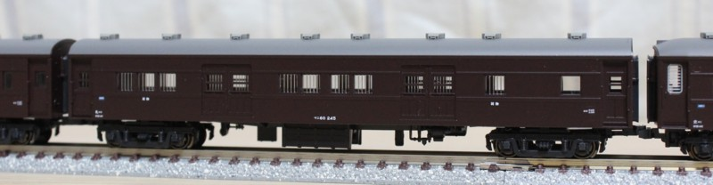

大雪の客車たち
「大雪」の客車たちが入線しています。 いずれも本州にもいた形式ですので、小改造で本州仕様に戻してみました。
スロ54
「きたぐに」な気分です。
ナンバー付け替え。
車軸発電機を車体マウントに交換。(リトルジャパンの余剰パーツを使用)
ナンバーを消す方法はほかの車両も共通ですが、#2000の紙やすりで文字をぎりぎりまで薄くした後、シンナーでのふき取っています。
最初からふき取ろうとすると白がにじんでしまいうまくいきません。
…ガラガラの12系で1ボックスとれるのと、グリーン車の座席とではどちらが楽だったのでしょうかなどと考えてしまいます。
オロハネ10
本州仕様の冷房化後といえば、「さんべ」です。相棒はオハネ12・オハネフ12と普通座席車たち。
グリーン車の連結はなかったかと。
ちなみにオロハネ10、実物が5両しかなかったのにもう1両購入してしまい、こちらは縦桟を青のままで変化をつけています。
ネットで検索してみたら、オロハネ10 1 は縦桟が青で塗られていたようですね。
ナンバー付け替え。504の“5”だけを残しました。
車軸発電機をベルト駆動式のものに交換。(トミックス50系用)
寝台側の窓の縦桟を銀で塗装。
Hゴムにグレーを色入れ。
車軸発電機のアップです。
スユニ61
幹線になると荷物車・郵便車が別になりますのでそれらしいのは山陰・四国・磐越あたりでしょうか。
交流電機にも似合いそうですね。
ナンバー付け替え。
車軸発電機を車体マウントに交換。(リトルジャパンの余剰パーツを使用)
煙突をベンチレータに復元。
マニ60

荷物列車風にして写真を撮ってみました。
マニ60は無加工です。 241〜245は北海道内封じ込めでしたが、ナンバーさえこだわらなければ211〜240(日本海縦貫用)と同じ形態なようです。 平台枠に改造するのも楽しそうですが、しばらく放っておいているうちにそのまま放置モードに。。。